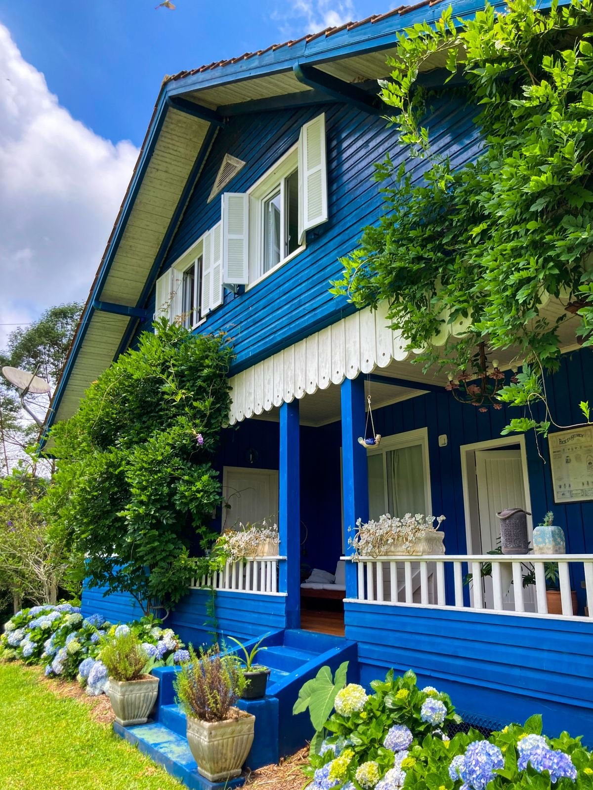
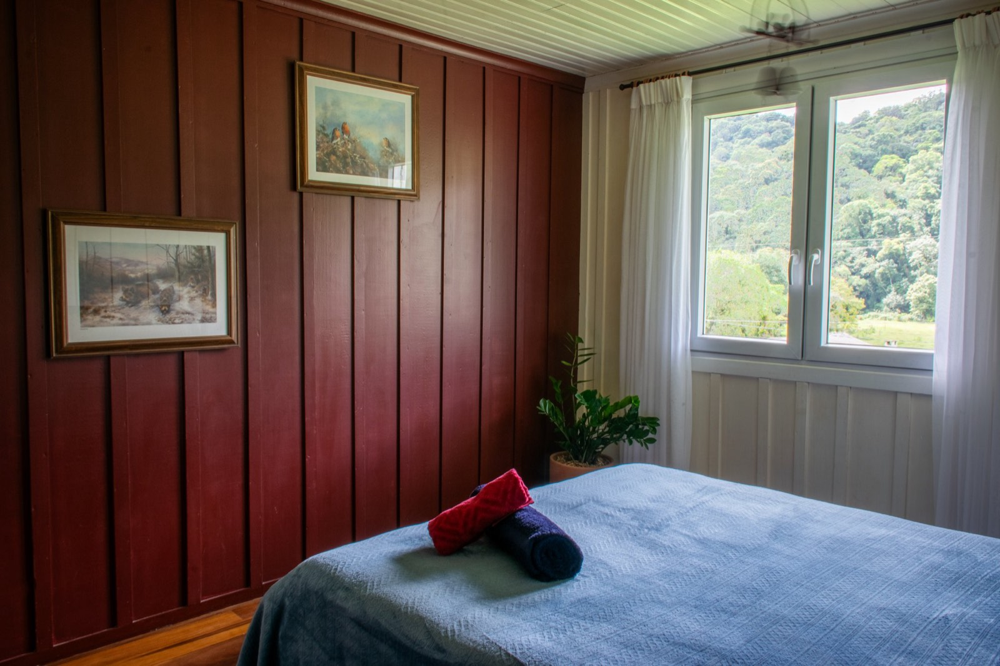
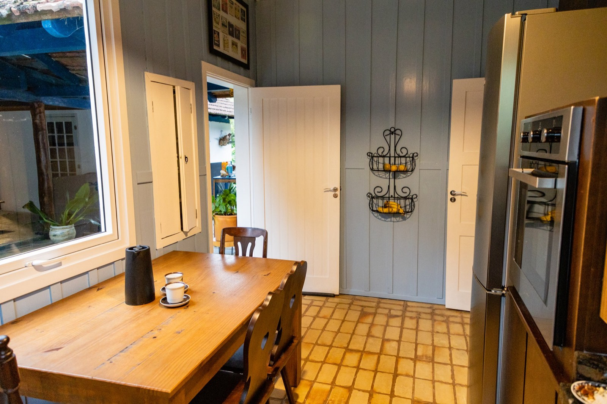
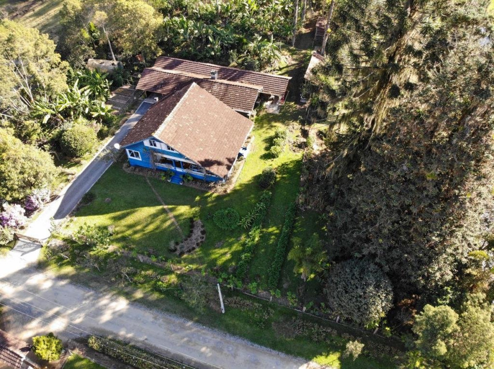

A única pressa é a da água do rio
Hospedagem, day-use e visitas em 14 hectares de Mata Atlântica
Hospedagem
Nossa casa fica em meio à Mata Atlântica, na Estrada Rio do Júlio — uma região tranquila, cercada por florestas. Aqui, o som da cidade dá lugar ao canto dos pássaros e à beleza das hortênsias; a única pressa é a da água cristalina que corre pelo rio pertinho da casa.






Day-use
Passe o dia aproveitando os espaços externos da Curi: fogão à lenha, churrasqueira e banheiro de apoio. Explore os 14 hectares para observar a fauna, fazer um piquenique ou tomar um banho de rio.
Visita guiada
Um passeio curto, onde apresentamos nosso projeto e sua proposta agroecológica. Durante a caminhada, visitamos diferentes pontos da propriedade e compartilhamos a história e os cuidados por trás do que é feito por aqui.
Marque sua visitaObservação de aves
Mais de 220 espécies registradas — nos comedouros, na varanda ou pelas trilhas.
Saiba como observarO som da cidade deu lugar ao canto dos pássaros. Voltamos diferentes.
— hóspede no Airbnb · ★★★★★